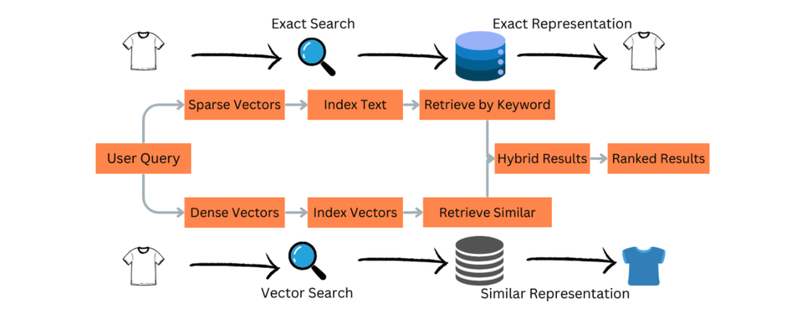
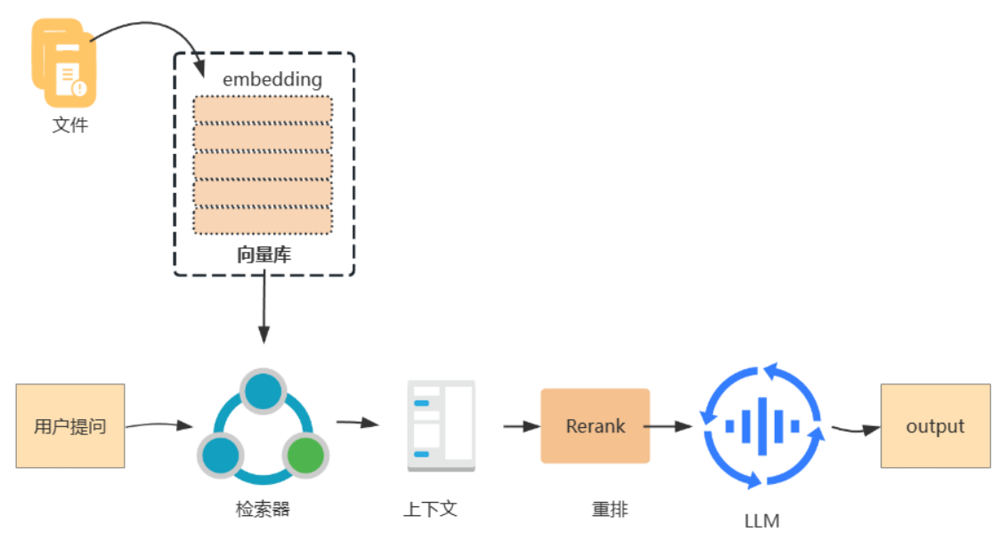
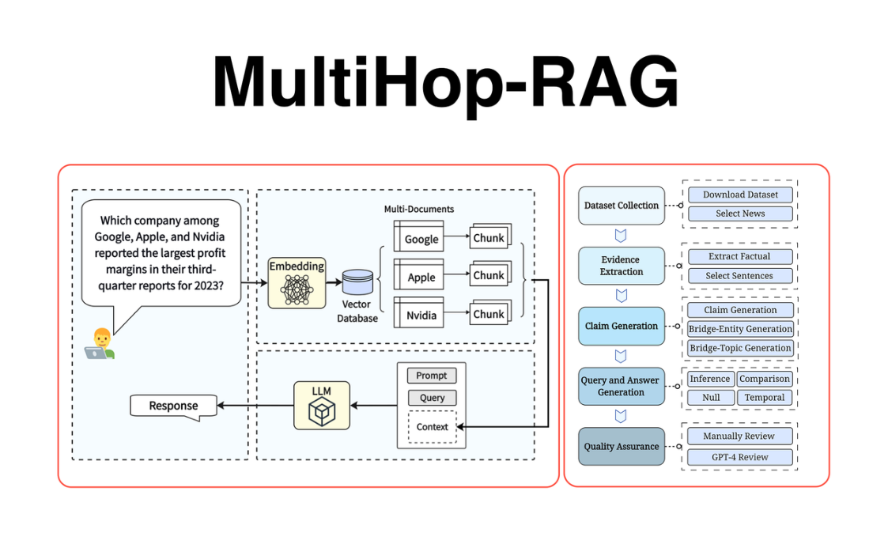

RAG 进阶
在完成基础的 RAG 架构搭建之后，如果希望系统能够在真实业务场景中稳定运行，还需要进一步进行 检索和上下文优化。简单的 RAG 系统通常只包含“向量检索 + LLM 生成”两个步骤，但在复杂知识库 中，这种结构往往会遇到一些问题，例如检索结果不稳定、上下文噪声过多或者模型输入长度受限。 因此，在实际工程中，很多团队会在 RAG Pipeline 中加入更多优化模块，以提升整体检索质量和生成 效果。这些技术通常被称为 进阶 RAG 技术，其中最常见的包括 Hybrid Search、Rerank、Context Compression 以及 Multi-hop RAG。
Hybrid Search
Hybrid Search（混合检索）是一种将 向量检索与关键词检索结合的技术。

虽然向量检索能够很好地理解语义相似性，但在某些场景中，它可能无法准确捕捉关键字信息。例 如，在技术文档或产品知识库中，一些专有名词、产品型号或代码标识往往非常重要，而这些信息通 过语义向量可能无法完全表达。
关键词检索（例如 BM25）在这种情况下反而更加有效，因为它能够精确匹配文本中的关键词。 Hybrid Search 的基本思路是：同时执行两种检索方式，然后将结果进行融合。例如：
-
使用向量检索找到语义最相似的文档
-
使用关键词检索找到包含关键字的文档
-
将两类结果合并并进行排序
通过这种方式，可以同时利用 语义理解能力和关键词匹配能力，从而提高整体检索效果。 在许多企业知识库系统中，Hybrid Search 已经成为默认的检索策略。
Rerank
在 RAG 系统中，向量检索通常会返回 Top-K 个候选文档，例如 Top-10 或 Top-20。但这些文档的排序 并不一定完全准确，因此需要进一步进行 Rerank（重排序）。

Rerank 的核心思想是使用一个更精确的模型重新评估检索结果，并对候选文档进行重新排序，从而挑 选出最相关的内容。
常见的 Rerank 方法包括：
Cross Encoder 模型
Cross Encoder 会同时输入用户问题和候选文档，然后计算二者之间的相关性得分。相比单独计算 Embedding 相似度，这种方法能够更精确地理解语义关系，因此排序效果更好。 LLM Rerank
在一些系统中，也可以使用大语言模型对候选文档进行评分。例如，让模型判断每一段文本与用户问 题的相关程度，然后根据评分进行排序。 在实际工程中，Rerank 通常会将 Top-K 检索结果进一步缩小为 Top-3 或 Top-5，从而保证输入到大 模型中的上下文内容更加精准。
Context Compression
在 RAG 系统中，大语言模型的输入长度是一个重要限制。即使现代模型支持较大的上下文窗口，也不 可能将所有检索到的文档全部输入给模型。因此，需要对检索结果进行 Context Compression（上下 文压缩）。
上下文压缩的目标是：在保留关键信息的前提下，减少输入文本长度。
常见的压缩方法包括：
段落筛选
只保留与用户问题高度相关的段落，而不是整篇文档。
句子级过滤
通过模型判断哪些句子与问题最相关，然后只保留这些句子。
摘要压缩
使用模型对文档进行摘要，生成更短但信息密度更高的文本。
通过上下文压缩，可以显著减少模型输入长度，同时避免无关信息干扰生成结果。
Multi-hop RAG
- 在一些复杂问题中，用户问题可能需要多个知识片段才能得到完整答案。这种情况被称为 Multi-hop Question，即多跳推理问题。

例如：
- “某公司 CEO 的母校在哪里？”
这个问题需要两步推理：
-
找到该公司的 CEO
-
找到 CEO 的毕业院校
- 如果只进行一次检索，系统可能无法找到完整答案。因此需要使用 Multi-hop RAG 技术。
Multi-hop RAG 的基本流程通常包括：
-
根据用户问题进行第一次检索
-
从检索结果中提取关键实体
-
根据新的信息进行第二次检索
-
将多次检索结果组合后生成答案 通过这种多阶段检索机制，系统可以逐步构建完整知识链，从而回答更加复杂的问题。
进阶 RAG 的整体架构
在实际系统中，进阶 RAG 技术通常会组合使用。例如，一个成熟的 RAG 系统可能包含如下流程： User Query ↓ Query Rewrite ↓ Hybrid Search ↓ Multi Query Retrieval ↓ Rerank ↓ Context Compression ↓ LLM Generation
通过这些优化模块，可以显著提升系统的检索质量和生成效果，使 RAG 系统能够在复杂业务场景中稳 定运行。